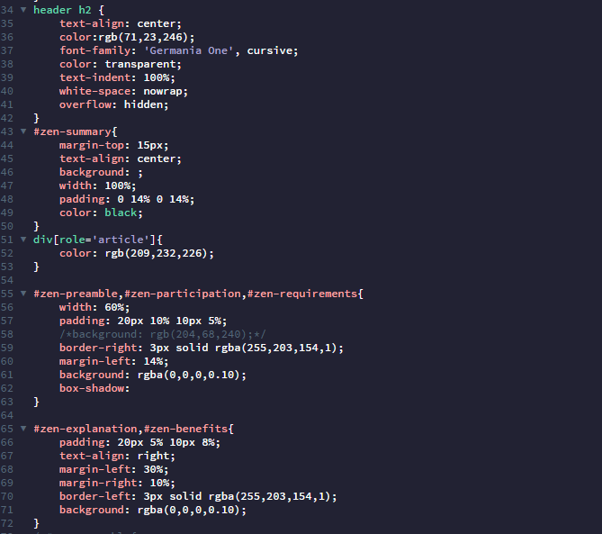
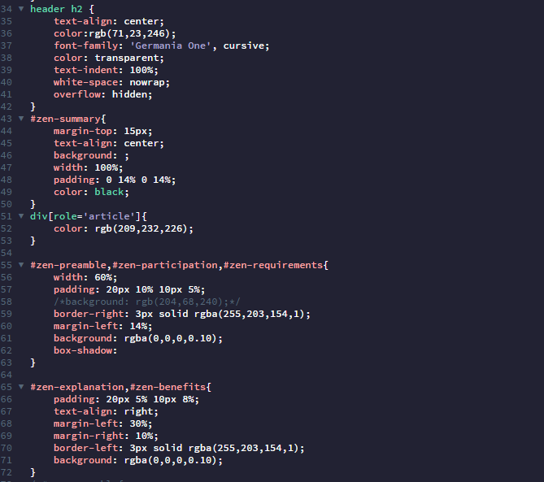

Hawkbill Sea Turtle


The first big website project that I did was about raising awareness to an endangered species. This was a group project, and we chose the Hawksbill Sea Turtle. This website was about team cooperation and building a website using HTML and CSS. We had a few weeks to research and learn about the turtle and write about it. Then we use Photoshop to make mock up web pages. Finally we code the website. This project introduced me to the process of building website.
 
